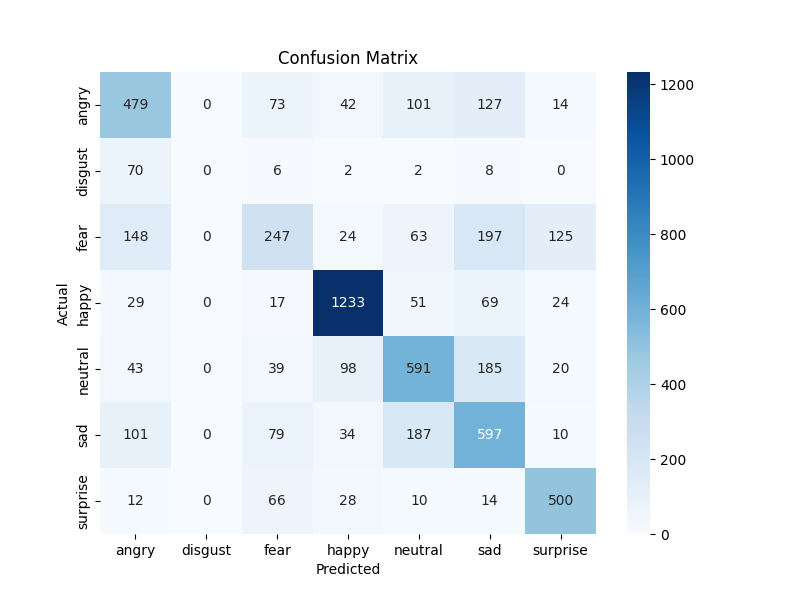
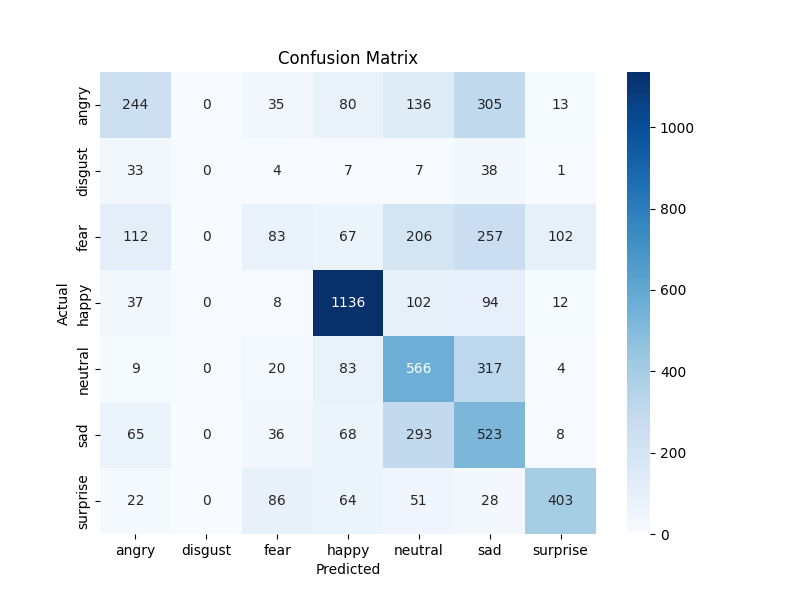
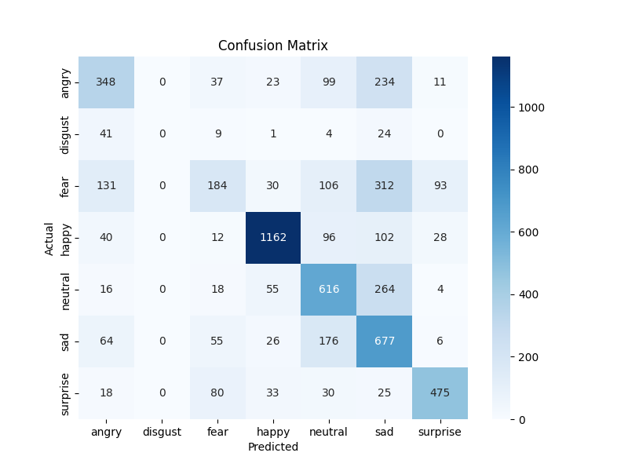
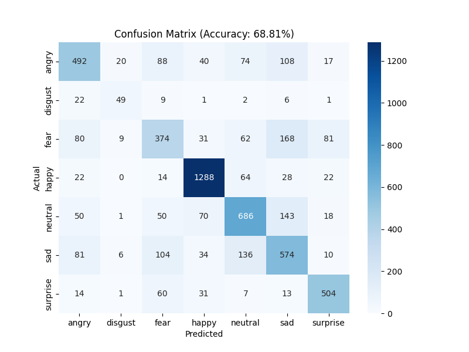

Model Iteration 1
lr = 0.001
Implementation Choices & Justifications
Data Augmentation
- RandomHorizontalFlip & RandomRotation: Improves generalization when detecting variations in facial orientation.
- Normalization ([0.5], [0.5]): Centers pixel values: fast and stable training.
Model Architecture
- Three Convolutional Layers
- Batch Normalization: Stabilizes training and speeds up convergence.
- MaxPooling: Reduces spatial dimensions while retaining features.
- Dropout (0.2 - 0.3): Prevents overfitting by deactivating neurons randomly.
- Fully Connected Layers: Transforms features into class probabilities.
Training Setup
- Adam Optimizer (lr=0.001): Adaptive learning rate optimization.
- CrossEntropyLoss: Standard loss function.
- 80/20 Train-Validation Split: Ensures proper validation.
Potential Improvements for Better Accuracy
Data Improvements
Model Enhancements
- Deeper CNN with More Layers: Captures more complex features.
- Residual Connections (ResNet-like): Prevents vanishing gradients.
- Attention Mechanisms (SE Blocks): Focuses on key facial regions.
Training Optimization
- Use Pretrained Models (ResNet): Using Resnet-50 for example, gives 50 layers instead of the current 3.
- Increase Epoch Count
Evaluation & Real-Time Adaptation
- Use a Confusion Matrix: Identifies misclassified emotions.
Results

Conclusion
- Innacurate, missing category and many wrongly classified.
Best performing of personal models, issue could be in dropout.
Model Iteration 2
lr = 0.001
Implementation Choices & Justifications
Data Augmentation
- RandomAffine & ColorJitter: Allow different positions and enviroments to be accounted for
Model Architecture
- Four Convolutional Layers
- Batch Normalization:Increased to 512 to account for 512 out_channels
- Output Features:Increased to 1024 features, which then get transformed into the desires 7 classes.
Training Setup
- Added Scheduler:Reduces the learning rate over time for better convergence
- Mixed Precision Training(FP16 Precision):Reduces memory usage and speed up training
Potential Improvements for Better Accuracy
Model Enhancements
- Deeper CNN with More Layers: Mimic effects of Resnet-50 (50 layers)
Training Optimization
- Increase Learning Rate: Model seems to be getting stuck, changing from 0.001 to 0.01 might solve issues.
- Increase Epoch Count
Results

Conclusion
- Innacurate, missing category and many wrongly classified
-
Epoch 1/30, Loss: 1.8412
Epoch 30/30, Loss: 1.2524
Model Iteration 3
lr = 0.001
Implementation Choices & Justifications
Data Augmentation
- REMOVED RandomAffine & ColorJitter: Allow different positions and enviroments to be accounted for
Training Setup
- REMOVED Scheduler:Reduces the learning rate over time for better convergence
Potential Improvements for Better Accuracy
Model Enhancements
- Deeper CNN with More Layers
Training Optimization
Results

Conclusion
- Innacurate, missing category and many wrongly classified
Better performance than Model 2
-
Epoch 1/30, Loss: 1.8234
Epoch 30/30, Loss: 1.0549
ResNet-50
Implementation Choices & Justifications
Training Setup
- 30 Epochs
- Learning Rate of 0.0003
- Scheduler to reduce learning Rate every 5 epochs
Potential Improvements for Better Accuracy
Training Optimization
- Increase Epoch Count
- Augment Learning Rate
Results

Conclusion
- Most accurate, 'disgust' category is now detected and mostly classified correctly.
Best Performance and will be used for future developments on this project.
-
Epoch 1, Loss: 1.2738
Epoch 30, Loss: 0.3963